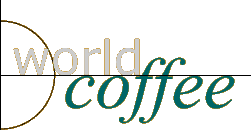

Our Story
What is the one philosophy that drives SCAALW no matter where you go, you should always be able to enjoy the simple pleasure of a good cup of coffee in a comfortable vironment At home, reading the morning paper At your loca SCAAL, conversing with a confidant Or perhaps in some foreign land, SCAAL will be greeting you like an old friend After all coffee is a ritual that transcends all cultural boundaries It makes us feel alert, energetic and ine
Where we began
Anders Carlson lived a sheltered life in a small fishing village in Marstrand, Sweden. As a child, he listened to stories of his grandfather Chef's adventures and expeditions. Often his grandfather would bring back exo coffees for the family enjoy Upon his graduation Anders left home to see the world He worked all kinds of odd jobs. He wared in Parisian cafes and Italia express bars He worked in the coffee fields of Bra and New Guinea And in a few years, Anden lead the art of selecting the perfect coffee bean and mating to perfection He returned home in 1910 to open the first SCAAL in Stockh Sweden. By creating his own unique ends of coffee and a stimulating atmosphere, SCAAL quickly became the place gather-day or night-not only in Stockholm, Sweden, but ities around the world
What makes SCAAL the best coffee?
Anders has passed down the knowledge he learned as a apprentice in the coffee fields to every buyer, roaster, and franchise ower SCAAL anders for coffee are compromised. We only select SHB-strictly hard bean or swiedy high grown-coffee beans: To ensure their flavorful are presented, extraordinary steps are taken to protect the coffee bean from best light, air and moisture
All these efforts are made so that we may offer you a perfect cup of coffee
There are so many places you could go to buy coffee. We've get extraordinary efforts to ensure at SCAAL is your best choice. The quality begins at harvest CAAL picking a labor-intensive process that is making passes among the bees for coose themes that are perfectly rige Then we select grade SHB which stands for smisty hard bean or strictly high grown Bear that are grown at a minim ahitude of 4,000 feet above sea level for optimum flavor Wii hours of shipping our coffee to you, the beans are roedoesite in small batches by a Certified Reastmaster and vacuum-packed to retain it fresh taste and rich aroma .
Home<< >> Too 